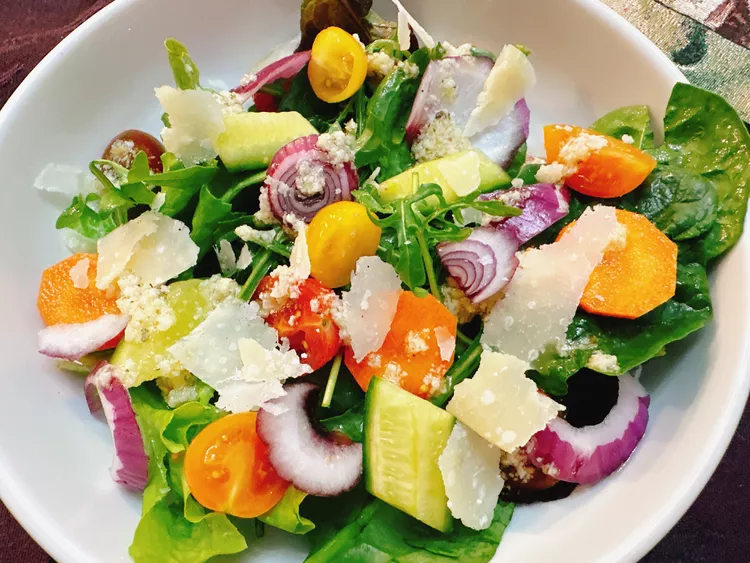

Home
Mixed Salad

Description
This mixed salad ensures you “eat the rainbow” and the bright pops of color make for a pretty presentation. Prepare this simple vinaigrette, or feel free to use a vinaigrette you prefer.
Ingredients
Vinaigrette
- 1 tablesppon vinegar
- 1 clove garlic, peeled
- 1/2 teaspoon Italian seasoning
- 1/4 cup olive oil
- 1 pinch salt
- 1 pinch black pepper
- 1 pinch sugar
Salad
- 4 heads artisanal lettuce, torn
- 5 ounces mixed spinach and arugula
- 3 mini cucumbers, sliced on the diagonal
- 2 carrots, sliced into thin coins
- 1 cup halved gourmet cherry tomatoes
- 1 red onion, sliced into slivers
- 3 ounces shaved Parmesan cheese
Steps
- In a food processor, add vinegar, garlic clove, and Italian seasoning. Add lid. Turn to purée and slowly stream in olive oil. Adjust seasoning by adding salt, pepper and sugar to taste.
- Add lettuce, spinach, arugula, cucumbers, carrots, tomatoes, and red onion to a large bowl. Toss to combine.
- Dress salad greens with vinaigrette and add shaved Parmesan cheese. Serve immediately.